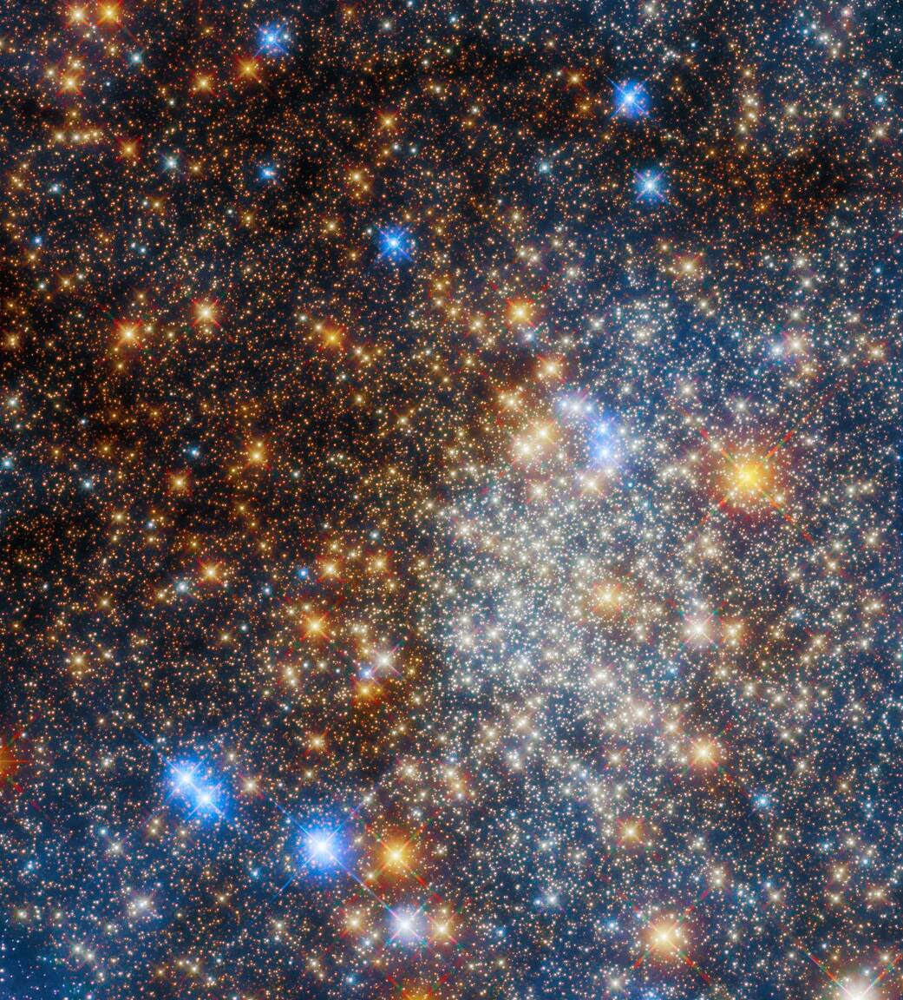

The Hubble Space Telescope (HST) stands as one of the most iconic and transformative instruments in our quest to understand the universe. Launched into orbit in 1990, Hubble has provided us with unparalleled views of the cosmos, capturing images in visible, ultraviolet, and near-infrared light.
Unlike ground-based telescopes, Hubble's position above the Earth's atmosphere allows it to observe celestial objects with unmatched clarity, free from atmospheric distortions. Over its operational lifetime, Hubble has been instrumental in numerous groundbreaking discoveries, from determining the rate of expansion of the universe to capturing the mesmerizing beauty of distant galaxies and nebulae.
The Hubble Space Telescope was a significant investment in space exploration. Its development and launch cost about $2.5 billion in 1990s dollars, which equates to roughly $5 billion today when adjusted for inflation. The subsequent servicing missions and operational costs have added to this figure. However, the invaluable scientific data and the breathtaking images it has provided make it worth every penny. As we look to the future of space exploration, Hubble's legacy serves as a testament to the power of human curiosity and our unyielding drive to explore the unknown.
 Next